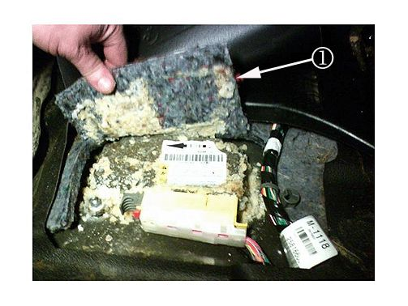

Restraints - Air Bag Readiness Light On.
TECHNICALBulletin No.: 09-09-41-005
Date: June 26, 2009
Subject: Air Bag Readiness Light On, Service Air Bag Message, Inflatable Restraint Sensing and Diagnostic Module (SDM) Corrosion (Replace SDM/Cut and Remove Carpet Pad)
Models:
2007-2009 Cadillac Escalade, Escalade ESV, Escalade EXT
2007-2009 Chevrolet Avalanche, Silverado, Suburban, Tahoe
2007-2009 GMC Sierra, Sierra Denali, Yukon, Yukon Denali, Yukon XL, Yukon Denali XL
Condition
Some customers may comment that the Air Bag Readiness Light is on. There may also be a Service Air Bag Message on the Driver Information Center (DIC). Upon further investigation, the Sensing and Diagnostic Module (SDM) may be corroded.
Cause
This condition may be caused by an unseated parking brake cable grommet causing water intrusion under the carpet or vinyl floor, resulting in wet padding. Power washing the vinyl floor and/or customer snow boots can introduce water to the padding above the SDM area. As the padding gets wet, water wicks through the padding towards the SDM over time. Over an extended period of time of constant exposure to water with potential salt/calcium and other elements, the SDM surface starts to corrode.
Correction
1. Replace the SDM per SI procedures. Refer to Inflatable Restraint Sensing and Diagnostic Module Replacement in SI.
2. Inspect the SDM connector for corrosion. If corrosion is evident, repair or replace the connector. Refer to SIR/SRS Wiring Repairs in SI.
3. Verify the parking brake cable grommet is sealed properly.

Important
Cut and remove the padding from around the SDM as instructed whenever the SDM is serviced even if no corrosion is evident to prevent future moisture and corrosion to the SDM and connector.
4. Cut and remove padding from the area around and above the SDM. Refer to illustration above. Make an addition cut to remove all of the padding above the SDM.
Parts Information
Refer to Group Number 16.712 (Inflatable Restraint System) of the GM Parts Catalog for the appropriate service parts.
Warranty Information
For vehicles repaired under warranty, use the table above.

Disclaimer